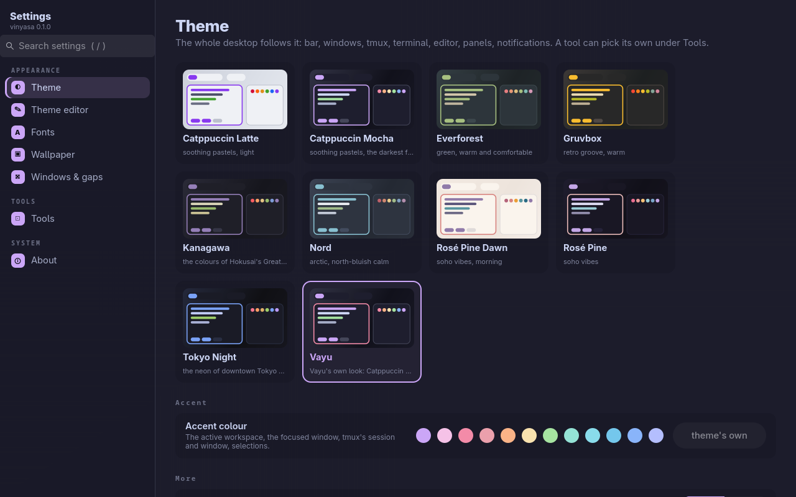
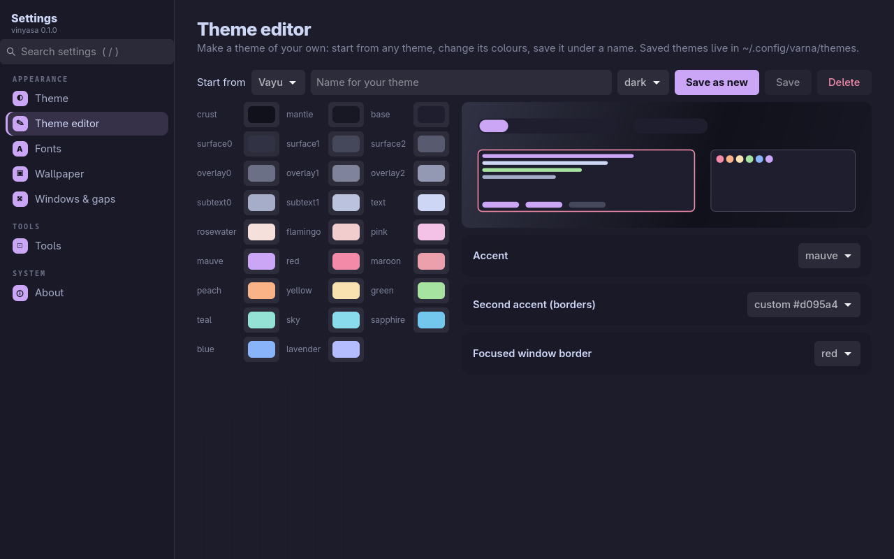
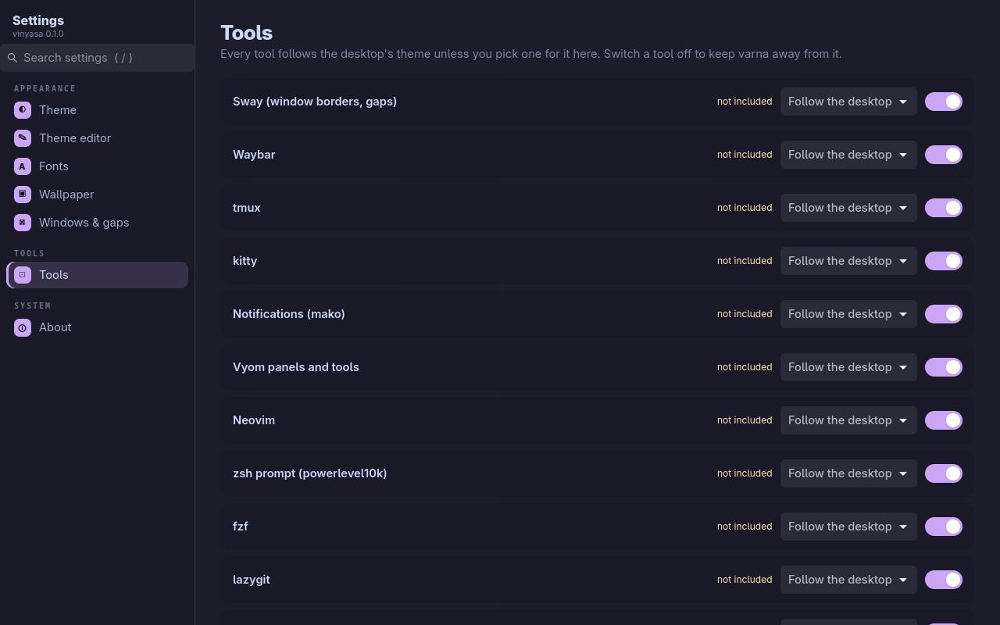

Vinyasa (विन्यास) is Sanskrit for "arrangement": setting things in their place.
GNOME and KDE each have one settings app; a tiling Wayland desktop usually has a folder of config files. vinyasa is the settings app for Vayu: a GTK 4 window with a page per area, a search box that finds any setting, and vim keys. Its core is themes: it drives varna, which sends one theme to every tool (sway, waybar, tmux, kitty, Neovim, notifications, panels, the prompt, the lock screen) and reloads them live.

#Pages
| Page | What you set |
|---|---|
| Theme | The desktop's theme (cards drawn in each theme's colours), the accent colour, dark/light twin, terminal transparency, whether GTK apps follow too |
| Theme editor | Your own theme: start from any theme, change any of its 26 colours and its accents with a live preview, save it under a name, delete it |
| Fonts | The interface font and size (GTK apps) and the monospace font and size (kitty) |
| Wallpaper | Pick one from ~/Pictures/Wallpapers, turn the daily wallpaper on or off, fetch today's |
| Windows & gaps | Gaps, border width, corner radius (sway, SwayFX) |
| Tools | Every tool follows the desktop unless you pick a theme for it; switch a tool off to keep the theme away from it; tools whose config doesn't include varna yet are marked |
| About | Versions, re-apply the theme everywhere, your themes folder, every tool's status |
Every change applies at once and the app restyles itself to match. Coming next: Wi-Fi, Bluetooth, sound, displays, keyboard, power, notifications, keybindings, date and language.


#Install
With kosha (installs varna too):
kosha install vinyasaOr by hand: install varna, then git clone https://github.com/Theyashsawarkar/vinyasa ~/.local/share/vinyasa && ln -s ~/.local/share/vinyasa/bin/vinyasa ~/.local/bin/vinyasa.
Requirements: Python 3.11+, GTK 4.10+ with PyGObject (python-gobject, gtk4 on Arch), varna. Optional: SwayFX for rounded corners, swaybg.
vinyasa opens it; vinyasa --page=wallpaper opens on a page. In Vayu, Super+, opens it.
#Keys
| Key | Does |
|---|---|
j / k | Next / previous page (in the sidebar), down / up a row of cards or the next / previous control (in a page) |
h / l | The sidebar / the page |
gg / G | First / last page |
/ | Search every setting (theme and tool names too); Enter opens the first match |
Enter / Space | Open the page, pick the card, change the setting |
Tab, arrows | Move between controls as usual |
? | All keys |
q / Esc | Quit (Esc in the search box clears it) |
#How it works
vinyasa holds no settings of its own. Theme, accent, fonts, gaps and per-tool picks are varna's (~/.config/varna/varna.toml, applied with varna's engine, so varna on the command line and vinyasa always agree); the wallpaper is ~/Pictures/Wallpapers/current.jpg and wallpaper.timer; fonts also go to GTK's settings. Applying runs in the background, so the window never freezes while tools reload.
#Contributing
See CONTRIBUTING.md; design decisions are in docs/adr.
#License
MIT.